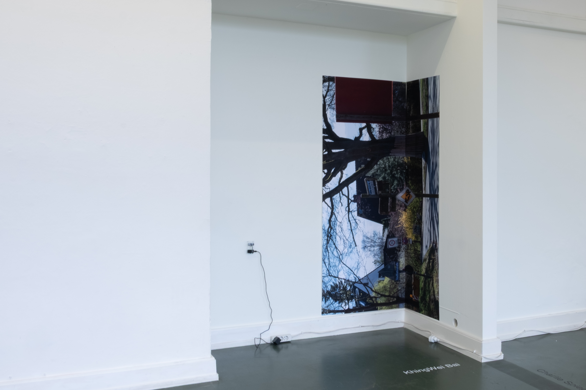
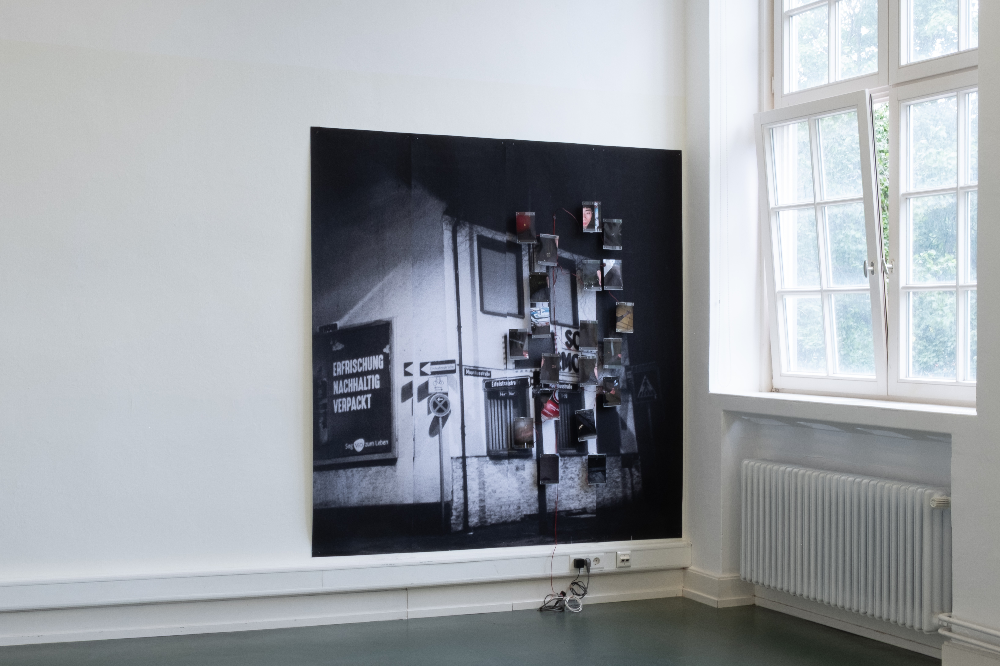
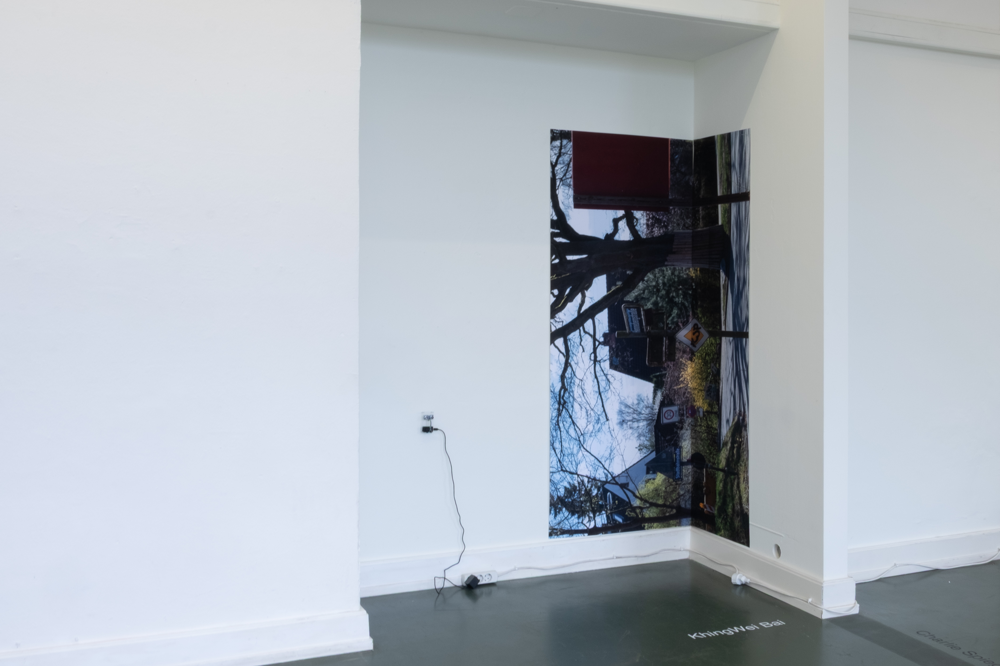
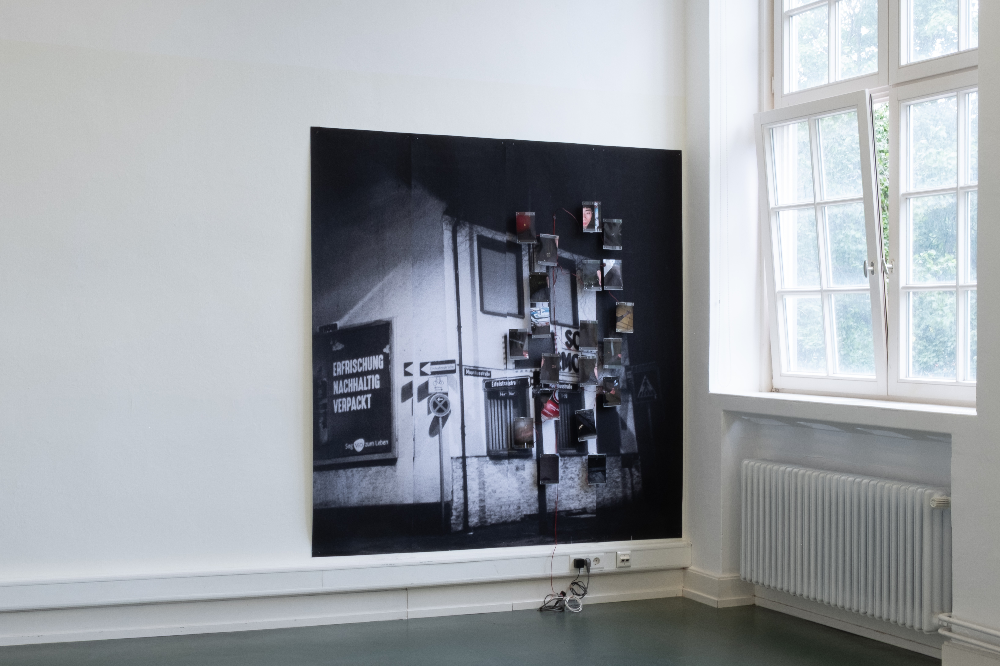

Destinesia
photo print 136*200cm, photo print 200*200cm, motion sensor, vibration motors

Destinesia: An instance of forgetting the purpose of a journey upon reaching the destination.
This work Destinesia explores the fragmented experience of a non-white body navigating through spaces dominated by white gazes. It reflects on the feeling of being dissected, objectified, and simplified, which is reduced to fragments rather than recognized as a full subject. Through fragmented images, delayed reaction, and spatial dislocation, the work tries to resist direct narrative, instead creating a space where reactions arise before understanding. Audience participation becomes part of the work, as perception, interpretation, and attention complete the experience, making the replication of a living experience into the exhibition space. By separating movement from response, the work creates a gap—both sensory and conceptual—that provokes thought and discomfort. This work tries to capture a state of hyper-vigilance, of being seen yet remaining unseen, where the destination becomes secondary to the process of navigating perception itself. It is a persistent act of resistance, unfolding through presence, absence, and delay.
 




project 2
4K video, 12:30 min loop, stereo sound
An exploration of temporal displacement and memory through moving image. This work examines the relationship between personal narrative and collective experience within institutional spaces.

project 3
fabric, steel, electronics, dimensions variable
A sculptural intervention that questions the boundaries between public and private space, utilizing responsive materials that react to presence and absence.

Installation Work
concrete, light, duration 6 weeks
A temporary intervention in public space that addressed questions of belonging and displacement through minimal gestures and material presence.

Digital Series
series of 15, each 40*60cm
A photographic series investigating surveillance, visibility, and the digital body. Each image in the series builds upon themes of observation and being observed.